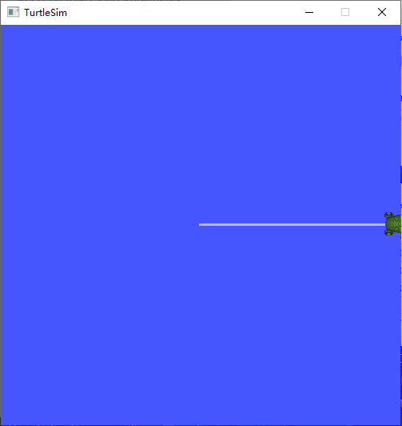
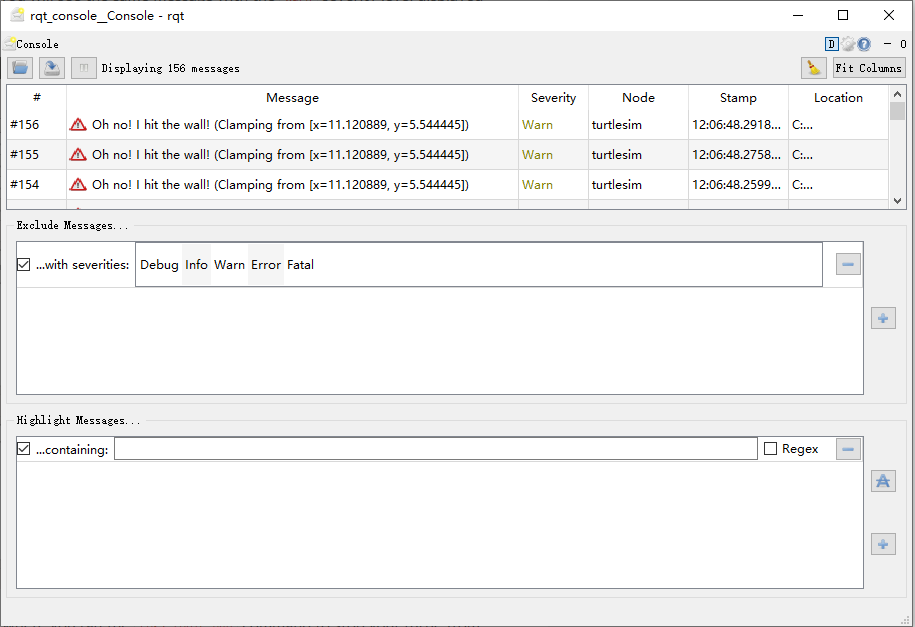

使用 rqt_console
目录
背景
rqt_console 是一个 GUI 工具，用来内省 ROS2 中的日志信息。通常，ROS2 的日志消息显示在终端中。使用 rqt_console，您可以随着时间的推移收集这些消息，以更有组织的方式仔细查看它们，过滤它们，保存它们，甚至在不同的时间重新加载保存的文件以便自省。
Nodes 使用日志以多种方式输出有关事件和状态的消息。为了用户的隐私性考虑，他们的内容通常是信息性的。
前提条件
1. 设置
在新的终端中输入下面命令启动 rqt_console:
ros2 run rqt_console rqt_console
会打开 rqt_console 窗口：

控制台的第一部分将显示来自系统的日志消息。
在中间，您可以选择通过排除严重级别来过滤消息。您还可以使用右侧的加号按钮添加更多的排除过滤器。
底部部分用于突出显示包含您输入的字符串的消息。您还可以在这一节中添加更多的过滤器。
现在用下面的命令在一个新的终端中启动 turtlesim:
ros2 run turtlesim turtlesim_node
再新开一个终端用于控制海龟：
ros2 run turtlesim turtle_teleop_key
2. 在 rqt_console 上的信息
为了生成 rqt_console 要显示的日志消息，我们让海龟撞到墙上去。我们使用 turtle_teleop_key 要海龟一直向前走，撞到窗口边沿（墙上）。
由于上面的操作，所以龟不断地撞到墙上。在 rqt_console 中，您将看到相同的消息，其中 Warn 严重级别反复显示，如下所示:


3. 日志级别
ROS2 的日志级别按照严重程度从高到低排列为：
Fatal
Error
Warn
Info
Debug
对于每个等级表明了什么，没有确切的标准，但可以肯定地假设:
Fatal消息表明系统将要终止，以试图保护自己免受损害。Error消息显示出不一定会破坏系统的重大问题，但会阻碍系统正常运行。Warn消息表示可能代表更深层次问题的意外活动或非理想结果，但不会直接损害功能。Info消息指示事件和状态更新，作为系统正按预期运行的可视化验证。Debug消息详细说明系统执行的整个一步一步的过程。
默认级别是 Info。您将只看到默认严重级别和更严重级别的消息。
通常情况下，只有 Debug 消息是隐藏的，因为它们是唯一低于 Info 的级别。例如，如果将默认级别设置为 Warn，则只会看到级别 Warn、 Error 和 Fatal 的消息。
3.1. 设置默认的日志级别
您可以在第一次运行 /turtlesim node 时使用重新映射设置默认的日志级别。在终端中输入以下命令:
ros2 run turtlesim turtlesim_node --ros-args --log-level WARN
现在你不会看到上一次你启动 turtlesim 时出现在控制台的信息级别警告。这是因为 Info 消息的优先级低于新的默认级别 Warn。
小结
rqt_console 如果您需要仔细检查来自系统的日志消息，那么它会非常有帮助。您可能希望根据各种原因检查日志消息，通常是为了找出出错的地方以及导致出错的一系列事件。